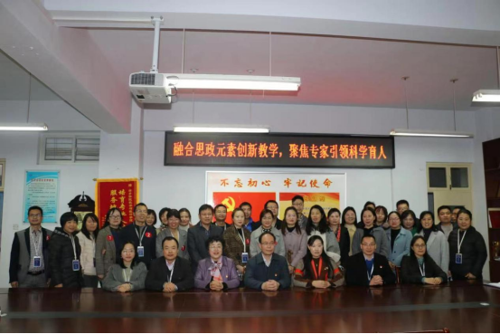

搜索
我
的
青
春
我
的
校
园
|  | |||||
|
计算机与信息工程学院于1984年开办计算机相关专业。现有计算机科学与技术、软件工程、物联网工程、数据科学与大数据技术、人工智能五个本科专业，培养高素质应用型人才。学院以学生为中心，注重将专业技能与学生的兴趣爱好相结合，组织学生参加中国大学生计算机设计大赛、蓝桥杯、华为杯等各种类型的全国大赛。 院长寄语： 大数据、物联网、人工智能等技术的迅猛发展为信息技术产业带来了机遇和活力。欢迎你加入新乡学院计算机与信息工程学院，用全新的视角看待世界，用计算机思维解决问题。相信我们，相信自己，通过四年专业学习，你将成为计算机领域的新鲜力量，运用新技术开创华彩篇章 |
生命科学与基础医学学院前身为始建于1984年的原平原大学生物学教研室，30多年来，学院紧紧围绕“建设鲜明特色的高水平应用型大学”的发展目标，扎根地方产业办专业。学院开设有生物技术、食品科学与工程、酿酒工程3个本科专业，食品检测技术专科专业和中美国际合作办学本科专业（生物技术），其中生物技术专业为河南省特色专业、一流专业。 院长寄语： 生命与健康、营养与美食、传统与未来......河南省重点学科、河南省工程实验室、河南省高等学校实验教学示范中心、河南省本科高校课程思政特色化教学研究示范中心邀请你共同探索微观世界的奥秘。生命科学与基础医学学院与你一起向未来，酿造人生。 |
数学与统计学院始建于二十世纪四十年代末，至今已有73年的办学历史，历经数学教研组、数学科、数学系、数学与信息科学系、数学与信息科学学院， 2020年更名为数学与统计学院，在前进中发展，在发展中壮大。成立至今为社会各方面培养本、专科学生万余人。我院现设有“数学与应用数学”、“信息与计算科学”、“应用统计学” 三个本科专业和“小学数学教育”一个专科专业。“应用数学学科”为学校首批重点学科，“数学学科”为学校第二轮重点学科，“数学与应用数学”专业为新乡学院特色专业；“信息与计算科学”专业为新乡学院专业综合改革试点、新乡学院首批转型试点专业；“应用统计”为新乡学院专业硕士学位授权校内培育点。 院长寄语：环境优雅的新乡学院，底蕴厚重的数学与统计学院，会因你的到来更加蓬勃而富有朝气。这里是成长的沃土，也是知识的海洋，在此你可以开足马力扬帆起航、涉取智慧能量，筑梦圆梦，成就学富五车、才高八斗的自己。数据铸就辉煌，统计智慧人生。欢迎你！ |
新乡学院物理与电子工程系的前身是新乡师范高等专科学校物理科，始建于1980年，1984年设置物理系，2007年新乡师范高等专科学校、平原大学、新乡市教育学院合并升本，成立物理系，随着办学规模的扩大和专业的增加，2011年改名为物理与电子工程系。2014年升格为新乡学院物理与电子工程学院。 物电系在30余年的发展过程中，正在逐步地走向成熟。 现有有四个教研室：物理教育教研室、应用电子技术教研室、电子信息工程技术教研室、基础物理教研室。三个研究小组：超导理论研究、磁性材料研究、电子信息理论与技术研究。 院长寄语： 物理与电子工程学院以习近平新时代中国特色社会主义思想为指导，全面落实立德树人根本任务，秉承“行胜于言”的校风，培养具有高度社会责任感，良好的科学文化素养的高素质应用型人才。当今世界正处于一个前所未有的大变革时代，物理与电子工程学院正乘风破浪、蓬勃发展。新时代，让我们“E”起探索物理之美，畅游自动化世界，用“芯”做事，成就未来！ |
新乡学院化学与材料工程学院拥有73年专业办学历史。河南省首批通过教育部普通高等学校师范类第二级认证的专业在此诞生，学校的第一个国家级一流本科专业建设点在此获批，学校的第一个院士工作站和省级工程实验室在这里成立。学院始终坚持落实立德树人的根本任务，以培养德智体美劳全面发展的社会主义事业建设者和接班人为己任，秉承“德善、开放、行动、专注”的院训，坚持“学生中心、产出导向、质量为王、持续改进”的办学理念，以学科建设为龙头，以改革创新为动力，以师资队伍建设为核心，以平台建设为基础，以服务经济建设为目的，为国家培养急需的化学、化工、材料及新能源领域的应用型专门人才。 院长寄语： 我院以培养德智体美劳全面发展的社会主义事业建设者和接班人为己任，坚决落实立德树人根本任务，为国家培养急需的一流化学、化工、材料及新能源领域的应用型专门人才。坚信化学与材料工程学院的明天将更加灿烂辉煌！ |
人文学院的办学历史可以上溯到1949年成立的太行公立新乡师范学校中文班，至今已有70多年的办学历史。学院多年来秉承“博学慎思，明德笃行；开拓创新，培育英才”的教育理念，坚持为社会培养德、智、体、美、劳全面发展的应用型人才。现有汉语言文学、汉语国际教育、历史学、秘书学4个本科专业，语文教育1个专科专业，在校生2000余人。现有专兼职教师130余人，其中教授17人、副教授58人，具有博士学位的教师26人，具有硕士学位的教师77人，双师型教师45人。有省级优秀教师3人、文明教师2人、师德先进个人2人、高校青年骨干教师4人、教学标兵2人，省教育厅学术技术带头人5人，新乡市优秀专家1人。著名作家刘震云为特聘教授，北京大学龙协涛教授等10余名知名专家为客座教授，周枫林等中原名师为双聘教师。 院长寄语： 人文学院70年来，培养2万余名毕业生，多名校友获得“全国模范教师”“中原名师”等荣誉称号。学院尊重学生个性发展，使每位学生学业充分发展，青春尽情绽放！多名学生在省级以上学科竞赛中获一等奖，考取硕士研究生。如果这是你追求的梦想与未来，请加入人文学院学子的行列！ |